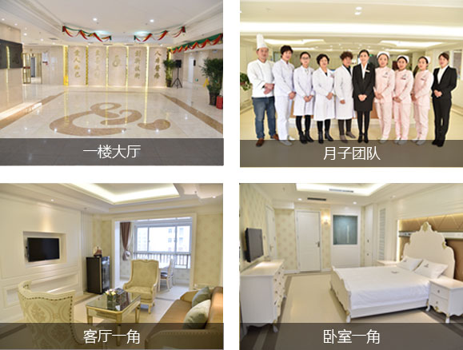
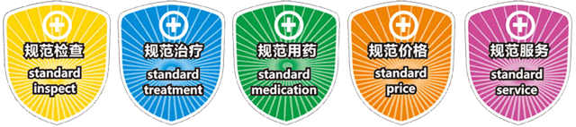

引言
人流手术是意外怀孕后的无奈选择，无论哪种人流方式，对身体都存在一定的伤害，女性朋友不要被大街小巷形形色色的人流广告给迷惑，随意做人流。即使真的万不得已，需要做人流，也一定要选择正规的医院，保证手术的安全性，避免对身体造成不可弥补的伤害。
人流手术是意外怀孕后的无奈选择，无论哪种人流方式，对身体都存在一定的伤害，女性朋友不要被大街小巷形形色色的人流广告给迷惑，随意做人流。即使真的万不得已，需要做人流，也一定要选择正规的医院，保证手术的安全性，避免对身体造成不可弥补的伤害。
圣玛CAC人流生态体系在手术前做各项检查和病史控制很重要。通过术前检查可确认是否怀孕、排除异常妊娠和确定怀孕时间及位置(排除宫外孕)、是否有妇科炎症(杜绝手术感染和并发症)等等。如果简化这些术前检查或干脆不检查，会给手术带来了极大的风险。圣玛CAC人流生态体系要求手术前至少包括彩色B超检查孕囊大小、白带常规排查妇科炎症、血常规检查明确受术者血液情况、心电图检查明确受术者心脏机能等检查。通过上述检查，杜绝手术并发症，降低受术者手术风险。
受术者在手术前都会出现紧张、不安，手术后会出现焦虑、担心等负面情绪。因此，对手术者实施术前及术后的心理疏导也非常重要，良好的心理疏导会减轻受术者的心理阴影。圣玛CAC人流生态体系中都设有专业女性人员在术前、术后对受术者进行心理疏导。缓解不良情绪，让受术者术前不紧张，术后不担忧。
虽然现在大多数人工流产手术采用可视技术，但毕竟是手术器械在脆弱的子宫腔内操作，一旦操作不当，就会造成子宫穿孔，吸宫不全或过度吸宫等，损伤子宫内膜和子宫颈，轻则造成子宫和宫颈炎症，重则导致不孕症。所以手术操作医师对人工流产手术的安全性影响很大。圣玛CAC人流生态体系要求手术医师必须是专业的妇产科执业医师，且具备丰富的临床手术经验，确保手术操作的标准性和精确性。
圣玛CAC人流生态体系下的所有人流手术均在符合国家级别标准的层流手术室中进行，而圣玛妇产医院斥巨资打造的手术室，其水平与环境领跑全省各大医院，手术环境无菌率达到99.2%以上，杜绝了手术环境导致的术中术后感染。
无痛人流采取全身麻醉技术，使受术者在手术过程中感觉不到疼痛。由于手术是采取静脉全麻技术，因此对麻醉医师的要求就比较高。圣玛CAC人流生态体系要求手术麻醉医师必须是执业麻醉师，且具备20年以上的临床麻醉经验。
严格的麻醉剂量使用标准是圣玛CAC人流生态体系中重要的一环，据以往临床观察，很多受术者在术后因麻醉剂量使用的不合理出现呕吐。圣玛CAC人流生态体系要求在术前检查明确受术者身体状况的情况下，选用适合受术者的麻醉药品，通过经验丰富的麻醉医师以及复杂全面的麻醉监测系统精确控制麻醉剂量，杜绝受术者出现术后不良症状。
传统的人工流产手术采用的是冰冷粗重的金属吸引管，很容易对脆弱的子宫内膜和子宫颈造成损伤，吸引管在进入子宫腔时，需要扩宫，很容易破坏宫颈粘液，造 成宫颈粘连，影响以后生育，而且金属吸引管是反复使用的，如果消毒不严，还会造成交叉感染。另外，单腔式的吸引管很容易引起子宫腔内压力上升，宫血逆流， 造成子宫内膜异位症，进而导致不孕症。圣玛CAC人流生态体系要求手术采用的手术耗材，必须是一次性的吸引管，且是用医用高分子材料制作的微管，管体柔软，对宫腔损伤较小。
手术过程的监控对于控制手术风险是非常必要的。尤其是在无痛人流手术过程中，因为受术者在麻醉状态下没有意识，对疼痛没有感觉。因此一旦出现身体异常，不借助监控设备，手术医师很难发现这些异常情况。圣玛CAC人流生态体系要求手术过程必须有全程的设备仪器监控受术者体征指标，最大程度控制手术风险
人工流产手术后的恢复是非常重要的。手术后如果消炎措施不当，很容易造成术后感染，导致手术后遗症，圣玛CAC人流生态体系为受术者术后提供了一个良好的恢复环境与专业的恢复指导。此外，圣玛妇产医院会赠送一张爱心联系卡给受术者，卡上包含详尽的术后注意事项及主治医师的姓名与联系电话，使受术者离院后也能随时得到帮助。
大多数人工流产受术者都希望在门诊和手术期间能够保护自己的隐私。但目前的情况是很多医疗机构不太注重保护受术者的隐私，这种情况在很多发展中国家尤其普遍。一人看病，众人围观的现象非常普遍，而医生或护士在医院走廊里直呼受术者姓名的现象也屡见不鲜。圣玛CAC人流生态体系非常注重对受术者的隐私保护，要求全程尽可能的保护受术者个人隐私。
CAC人流生态体系(Caring yourself and Cherish life，珍爱自己，尊重生命) 是国际妇产协会和中国妇产科医院联盟推荐的人流体系，其倡导关爱自身与尊重生命的人文理念，是目前世界上安全级别较不错的人流技术体系之一。它包含：对手术流程的规范化操作和高标准要求、对人工流产技术的规范选择与慎重使用、对受术者的关怀与对生命的尊重。
开封新区圣玛妇产医院秉着对患者负责的态度，始终坚持严格规范的术前检查科学判断手术者体质，由经验丰富的计生医疗团队制定出专业的人流手术方案，保护女性生育能力。
 |
王贵田 副主任医师 |
手术特点
在高清三维立体可视设备引导下，采用最新麻醉技术进行手术并全程监控，可直接观察宫腔内部状况，确定孕囊方位，对孕囊进行定点吸引。术中使用一次性纤细超微管，轻柔、精准地吸出孕囊，对子宫内膜几乎无损伤。该技术的最大优势是超微创几近无创，安全几乎零伤害。是目前舒适度更高，安全性更强的人流新技术。特别适合初次怀孕以及有生育需求的女性。
术后疗养
1、专业护理人员专人负责制护理 ；2、术后保宫康疗3次(30分钟/次)；3、饮品任选（牛奶、咖啡、果汁、黑芝麻糊等）；4、营养粥；5、80元彩超免费复查2次；6、术后恢复调理中药汤剂（5副）7、术后VIP休养区家属陪伴。
手术特点
采用国际先进镇痛技术，利用双腔减压吸引管的优势，即：在微管基础上增设副管，主管与副管不相通；主管吸引胚胎组织、副管将宫腔内升高的压力以流体力学特有的方式排出。从而大大保护了子宫内膜、有效防止人流术中宫血逆流、降低术中子宫壁肌张力。术后感觉更舒适，能更快康复。
术后疗养
1、专业护理人员专人负责制护理；2、术后保宫康疗2次(30分钟/次)；3、饮品任选（牛奶、果汁、黑芝麻糊等）；4、营养粥；5、80元彩超免费复查2次；6、术后恢复调理中药汤剂（3副）7、术后VIP休养区家属陪伴。
手术特点
结合可视无痛技术，采用高分子纳米微管、医用高分子材料管体，柔韧性好，操作起来得心应手，有效避免子宫穿孔。减少术中出血。不损伤宫颈正常组织。
术后疗养
1、术后保宫康疗1次（30分钟）；2、饮品任选（果汁、黑芝麻糊等）；3、营养粥；4、80元彩超免费复查2次；5、术后恢复调理中药汤剂（2副）7、术后独立休养区家属陪伴。
手术特点
配合先进的可视成像系统，具有操作时间短，出血少的特点，从而在更大程度上减少了病人的痛苦。
术后疗养
1、饮品任选（红糖水、果汁等）；2、营养粥；3、80元彩超免费复查1次；4、术后恢复调理中药汤剂（1副）。
妈妈说，女人小产也要坐月子；医生说，人流术后休养很重要；可是，你是否因为意外怀孕，不敢让父母知道?你是否因为身体虚弱，苦于无人照顾?他是否因为不会照料，而让你没有得到应有的休养?当他不懂得疼你的时候，你是不是应该更要懂得疼自己？
圣玛小月子维养中心，五星级家庭化环境，专业主厨膳食料理，24h管家式服务，给你没有伤害的爱。
做人流一定要选择正规的大医院做人流才安全，不要被低价人流诱惑，正规大医院收费都是严格按照物价局规定的，不会乱收费，而且更加重要的是安全可靠。
开封圣玛妇产医院的收费都是按照卫生局以及物价局标准制定，严格遵守物价管理条例，始终遵循规范合理的收费标准，并明确告知每一项消费价目，中途无其他隐性消费。